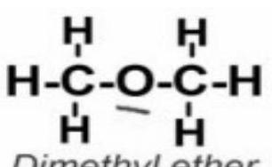
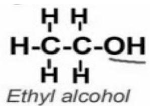

UNIT 7: HOMOLOGOUS SERIES
Unit objectives
By the end of the unit, the learner should be able to:
- Define the term homologous series
- Determine the characteristics of homologous series
- Draw the structure of functional groups
- Identify the types of isomerism
7.1 Definition
A homologous series is a group of organic chemical compounds that have a similar structure but only differing from each other by the number of $\mathrm{CH}_{2}$ units in the main/longest carbon chain.
7.2 Characteristics of a homologous series
- All members of the series can be represented by a general formula. The table below shows the common types of hydrocarbons and their general formula.
Downloaded by Patrick Ngobiro (pngobiro@gmail.com)
| Series | General Formula |
|---|---|
| Alkanes | $\mathrm{C}_{\mathrm{n}} \mathrm{H}_{2 \mathrm{n}+2}$ |
| Alkenes | $\mathrm{C}_{n} \mathrm{H}_{2 n}$ |
| Alkynes | $\mathrm{C}_{n} \mathrm{H}_{2 n-2}$ |
| Halogen substituted alkanes, alkenes and arenes | e.g. $\mathrm{C}_{n} \mathrm{H}_{2 n+1} \mathrm{Br}$ bromoalkane |
| Alcohols (oxygen containing organic compounds) | $\mathrm{C}_{n} \mathrm{H}_{2 n+1} \mathrm{OH}$ |
| Aldehydes (oxygen containing organic compounds) | $\mathrm{C}_{\mathrm{n}} \mathrm{H}_{2 n} \mathrm{O}$ |
| Carboxylic acids (oxygen containing compounds) | $\mathrm{C}_{n} \mathrm{H}_{2 n} \mathrm{O}_{2}$ |
| Amines (nitrogen containing organic compounds) | $\mathrm{C}_{\mathrm{n}} \mathrm{H}_{2 \mathrm{n}+1} \mathrm{NH}_{2}$ |
| Amides (carboxylic acid derivatives) | |
| Nitriles |
- n represents the number of carbon atoms in the chain.
- Note that in some cases the minimum value of the number of carbons in the chain (n) is greater than 1 (n>1). For example, ethene (2 carbons) is the smallest alkene and ethanenitrile (2 carbons) is the smallest nitrile
- All members of a series can be prepared by the same general methods.
- Organic compounds that are part of the same homologous series generally have similar chemical properties as each other, due to the presence of the same functional group in the molecules of all compounds in the series.
Even though members of the same homologous series generally have similar chemical properties there may still be trends through the group (e.g. as reactivity and rates of reaction vary with parameters such as molecular weights).
- Physical properties of homologous show a gradual change in the series with the increase in molecular weight due to the progression of sizes. E.g. the boiling point of ethane is higher than that of methane because the molecules of ethane have more Van der Waals forces (intermolecular forces) with neighbouring molecules than is for methane.
7.3 Structure and bonding of functional groups
As mentioned earlier, functional groups are structural units within organic compounds that are defined by specific bonding arrangements between specific atoms. Most of them are composed of the elements from the upper right hand portion of the periodic table i.e. C, H, N, O, S or Halogens (elements in group VII of the periodic table).
Importance of functional groups
- They determine the chemical behaviour of a given compound.
- They also play an important role in organic compound nomenclature
Atoms of a functional group are linked together and the rest of the compound by covalent bonds. The structural features C=C, C≡C, C=O, OH, NH2, and C≡N are the functional groups of alkenes, alkynes, carbonyl compounds, alcohols, amines, and nitriles, respectively. The skeletal formulae of select functional groups are as shown below:
| Functional group | Brief description | Skeletal formula |
|---|---|---|
| Carboxylic acid (-COOH) | The C atom of the carbonyl group (C=O) bonded to an OH group. | [R]C(=O)O |
| Ester | The carbonyl group joined via carbon to another oxygen atom. | [R]C(=O)O[R'] or [3H]C(=O)OCC |
| Amide | The carbonyl group (C=O) is bonded to an N atom. | [R]C(N)=O |
| Aldehyde (-CHO) | The carbonyl group is bonded to at least one H atom | [R]C=O or [R]C([2H])=O |
| Ketone (>C=O) | The two additional bonds of the C of the carbonyl group are bonded to C atoms. | [R]C([R'])=O or [R]C([Z8])=O |
| Alcohol (-OH) | There is an OH group bonded to a C in the main C chain. | R-OH |
| Alkene | Unsaturated hydrocarbon i.e there is one or more carbon carbon double bond along the main C chain. | |
| Alkyne | Unsaturated hydrocarbon i.e. there is a triple carbon bond along the main C chain. | $\mathrm{RC} \equiv \mathrm{CR}$ |
| Ether | Contains an oxygen atom bonded to two hydrocarbon groups. | R-O-R' |
| Nitrile (-C≡N) | Have a triple bond between C and N. | $\mathrm{R}-\mathrm{C} \equiv \mathrm{N}$ |
NB: the 'R' group is a symbol commonly used to indicate a C chain without specifying the exact length, especially when we are interested in something that is occurring specifically at one location on the molecule (in this case, the functional groups in organic compounds).
$R_{1}$ is written to indicate that R and $R_{1}$ may not necessarily be the same.
7.4 Types of isomerism
Structural isomers are compounds with the same molecular formula but different structural formula, i.e. their atoms are bonded in different ways. They differ in physical properties, e.g. boiling points. For example, ethyl alcohol and dimethyl ether have the same molecular formula of $\mathrm{C}_{2} \mathrm{H}_{6} \mathrm{O}$ but they differ in structural formula as given below:
Dimethyl ether
Butane ------ Methylpropane
The naming system explained on page 20-21 is known as the IUPAC (International Union of Pure and Applied Chemistry) system. The IUPAC names to distinguish between structural isomers of alcohols, aldehydes, ketones, carboxylic acids and halogenoalkanes containing up to six carbon atoms are required.
Types of structural isomerism
- Chain or skeletal isomerism
Compounds having the same molecular formula but different structures of their carbon chain are called chain isomers. - Positional isomerism
Compounds having same molecular formula but different position of their functional groups. E.g. 1-butene, 2-butene. - Functional isomerism
Compounds having same molecular formula but different functional groups. E.g. $\mathrm{C}_{3} \mathrm{H}_{6} \mathrm{O}$ (propanone and propanal). - Metamerism
Compounds having same molecular formula but different alkyl groups attached same multivalent central atom.